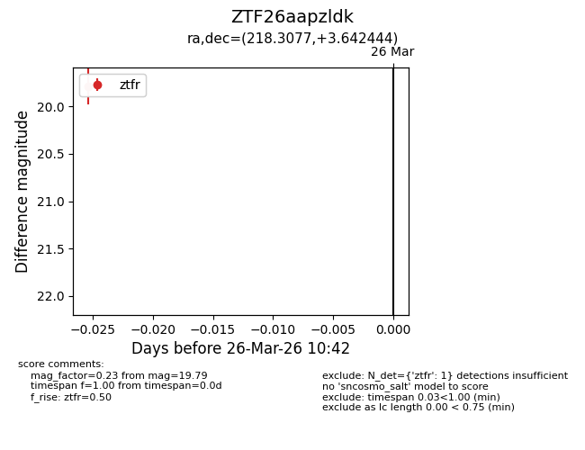
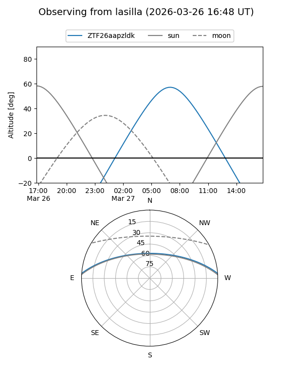
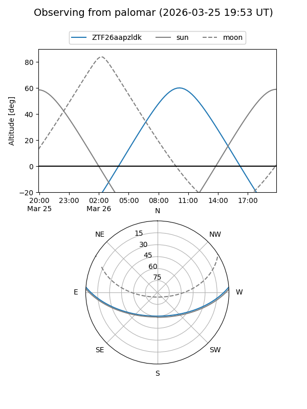

ZTF26aapzldk
Target ZTF26aapzldk at 2026-03-26 10:45
Aliases and brokers:
FINK: link
Lasair: link
ALeRCE: link
alt names
ZTF26aapzldk (ztf,fink_ztf)
Coordinates:
equatorial (ra, dec) = 218.3077,+3.64244
equatorial (HMS+DMS) = 14:33:13.85,+03:38:32.80
galactic (l, b) = (353.3627,+56.19967)
Flags:
Photometry:
last ztfr=19.79
1 ztfr detections
Lightcurve

Visibility


Additional plots